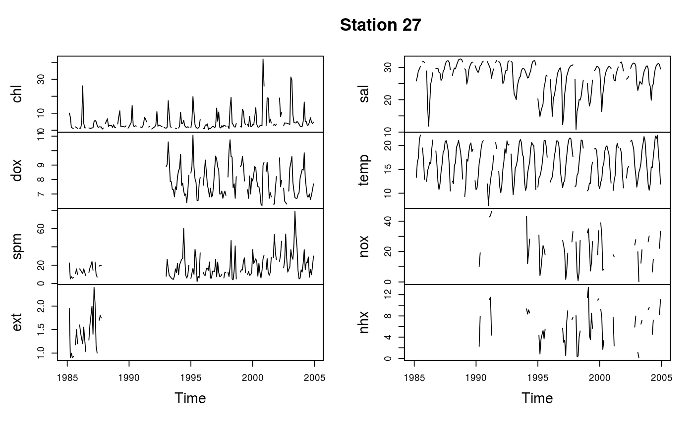
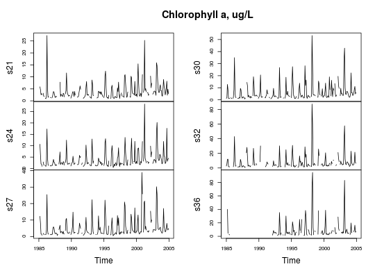
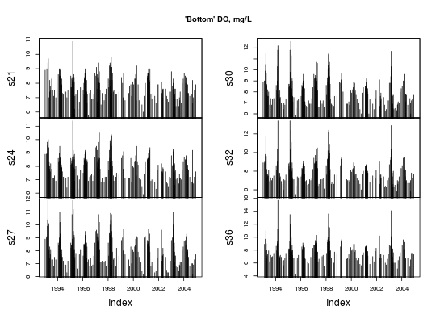

Creates a matrix time series object from an object of class "WqData",
either all variables for a single site or all sites for a single variable.
| object | Object of class |
|---|---|
| focus | Name of a site or water quality variable. |
| layer | Number specifying a single depth; a numeric vector of length 2
specifying top and bottom depths of layer; a list specifying multiple depths
and/or layers; or just the string |
| type |
|
| qprob | quantile probability, a number between 0 and 1. |
A matrix of class "mts" or "zoo".
When qprob = NULL, the function averages all included depths for each
day, the implicit assumption being that the layer is well-mixed and/or the
samples are evenly distributed with depth in the layer. If layer =
"max.depths", then only the value at the maximum depth for each time, site
and variable combination will be used. If no layer is specified, all depths
will be used.
The function produces a matrix time series of all variables for the
specified site or all sites for the specified variable. If type =
"ts.mon", available daily data are averaged to produce a monthly time
series, from which a quarterly or annual series can be created if needed. If
you want values for the actual dates of observation, then set type =
"zoo".
When qprob is a number from 0 to 1, it is interpreted as a
probability and the corresponding quantile is used to aggregate observations
within the specified layer. So to get the maximum, for example, use qprob =
1. If type = "ts.mon", the same quantile is used to aggregate all the
available daily values.
The layer list is allowed to include negative numbers, which may have
been used in the WqData object to denote variables that apply to the
water column as a whole, such as, say, -1 for light attenuation coefficient.
This enables focus = 's27' and layer = list(-1, c(0, 5)) to
produce a time series matrix for station 27 that includes both attenuation
coefficient and chlorophyll averaged over the top 5 m. Negative numbers may
also have been used in the WqData object to identify qualitative
depths such as “near bottom”, which is not uncommon in historical
data sets. So data from such depths can be aggregated easily with other data
to make these time series.
# Create new WqData object sfb <- wqData(sfbay, c(1, 3:4), 5:12, site.order = TRUE, time.format = "%m/%d/%Y", type = "wide") # Find means in the 0-10 m layer y <- tsMake(sfb, focus = 's27', layer = c(0, 10)) plot(y, main = 'Station 27')# Or select medians in the same layer y1 <- tsMake(sfb, focus = 's27', layer = c(0, 10), qprob = 0.5) plot(y1, main = 'Station 27')# Compare means:medians apply(y/y1, 2, mean, na.rm=TRUE)#> y.chl y.dox y.spm y.ext y.sal y.temp y.nox y.nhx #> 1.0642680 1.0019440 1.1172737 1.0717303 0.9995585 1.0007394 1.0644137 1.0496283# Combine a layer with a single additional depth y <- tsMake(sfb, focus = 'chl', layer = list(c(0, 2), 5)) plot(y, main = 'Chlorophyll a, ug/L')# Use values from the deepest samples y <- tsMake(sfb, focus = 'dox', layer = "max.depths", type = 'zoo') head(y)#> s21 s24 s27 s30 s32 s36 #> 1993-01-05 8.9 8.9 8.9 8.9 8.9 NaN #> 1993-02-16 NaN 8.9 9.0 9.0 8.9 8.9 #> 1993-02-24 9.0 9.0 9.1 9.0 9.1 NaN #> 1993-03-11 NaN 9.8 9.9 9.9 9.8 9.7 #> 1993-03-18 NaN 9.6 10.4 10.5 9.6 7.9 #> 1993-03-25 9.4 9.9 11.9 11.5 11.7 11.0plot(y, type="h", main = "'Bottom' DO, mg/L")